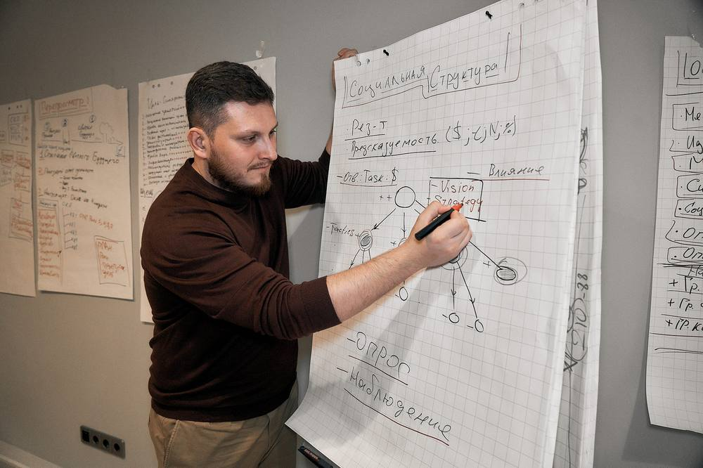

Из операционной текучки — к системе кратного роста
«Инструменты трекинга» для предпринимателей и руководителей. Разбираем узкие места вашего бизнеса и собираем рабочую систему: без воды, только то, что применяется сразу.

Три ситуации, в которых интенсив даёт максимум
Каждый участник уходит с картой узких мест своего бизнеса и планом на три месяца.
Потеряна ясность
Непонятно, куда двигаться дальше, энергия утекает в текучку, планы выполняются наполовину.
Команда не слышит
Сотрудники не понимают задач, всё держится на вас. Хочется системы вместо ручного управления.
Пора на новый уровень
Готовы к росту дохода и масштабированию, нужен маршрут к х3 и выше.
Два дня плотной практики
Мини-лекции, мастермайнды, работа в тройках и разбор кейсов участников.
День 1. Диагностика и стратегияЧто сдерживает бизнес и куда идти
- Введение в трекинг: что на самом деле сдерживает предпринимателя
- Практика: диагностика собственного бизнеса инструментами трекинга
- Базовые страхи предпринимателя и работа с поведенческими барьерами
- Модель «предприниматель, команда, организация»
- Цели, которые достигаются, и маршрут к кратному росту
- Работа в тройках: трекер, клиент, наблюдатель
День 2. Инструменты ростаКлиенты, продукт, продажи и внедрение
- Кастдевы, сегментация клиентов и полная схема продаж
- Управление продуктом на основе обратной связи
- Основные и дополняющие элементы кратного роста компании
- Как построить трекерскую программу для себя или клиентов
- Разбор кейсов роста крупных компаний: от 1 до 10 млрд
- Итог: готовый план действий на три месяца
Ясность, куда и как двигаться дальше
Карта узких мест вашего бизнеса
Система, в которой команда понимает задачи
План действий на три месяца
От первого вечера до мастера
Каждая ступень самостоятельна. Нажмите на ступень: формат, цена и результат.
Трекинг под вашу задачу
Два вопроса, и на экране формат с ценой.
Среди компаний, с которыми работали основатель и команда: Сбер, МТС, Яндекс, «Лаборатория Касперского», «Газпром нефть», ТЕХНОНИКОЛЬ.
- Двухдневный интенсив и все материалы
- Лекции по управлению собой и работе со стрессом
- Материалы по ритуализированному управлению
- Закрытый чат участников и поддержка после тренинга
- Вернуться и освежить инструменты
- Разобрать новые кейсы и задачи
- Встретить новый состав группы
- Участвовать можно сколько угодно раз